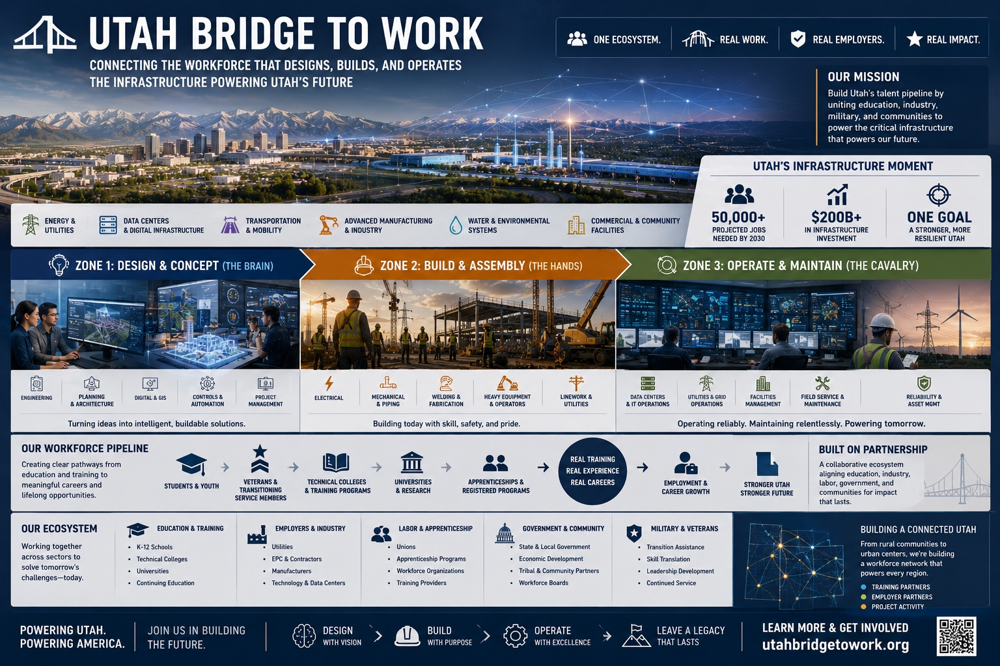

This is not a career fair. It's a direct-hire, direct-enroll matchmaker for Utah's infrastructure workforce — a voluntary coalition uniting education, industry, military, and communities to power what powers Utah's future.
A pre-pursuit, market-conditioning program. We bring Utah employers with real near-term openings together with veterans, students, recent graduates, apprenticeship cohorts, and career-changers — at one direct-hire and direct-enroll event in 2026, with structured follow-up to convert conversations into hires.
Not a generic career fair. Not a marketing roadshow. Not a new legal entity, government program, or revenue venture. Every participating organization brings near-term opportunities — jobs open now, training programs starting soon. No fluff.
The day is organized around the same three zones that organize the work itself — so candidates and employers find each other by capability, not by alphabetical booth order.
Engineering · Planning & Architecture · Digital & GIS · Controls & Automation · Project Management
Electrical · Mechanical & Piping · Welding & Fabrication · Heavy Equipment · Linework & Utilities
Data Centers · Utilities & Grid Ops · Facilities Management · Field Service · Reliability & Asset Management
Packets, 1-pagers, and program documents — downloadable, no login required. The Advisory and Vendor packets are the most current; the 1-pagers are short, audience-specific summaries you can hand out.
One-page entry sheet for resource folders, mailings, and printed handouts. Links, contacts, leadership, QR.
↓ Download Cover & Contact Sheet (PDF)The following internal working documents live in the program's Google Drive. Email info@utahbridgetowork.org with your role to request access. Some require coalition membership to view.
One day. 20–30 employers. 10–15 training providers. Hundreds of veterans, students, and career-changers — all ready to engage on the spot.
Participants must:
Utah Bridge to Work is a voluntary coalition — not a new agency, not a vendor, not a fundraising vehicle. Every partner contributes time, networks, venues, or in-kind support around a shared outcome: real Utah hires and enrollments.
Cover a tangible cost: venue, catering, candidate transportation, on-site interview rooms. Recognition modest and proportional.
Talk to us →Industry, education, state, or community organizations contributing networks, candidates, or operational support.
Apply →Trade associations, alumni networks, veterans organizations: share the event with your membership in exchange for visibility.
Get the toolkit →Utah Bridge to Work was conceived as a grassroots, fast-moving response to a structural workforce gap — built by industry, education, and public-sector leaders willing to act before formal programs catch up.
Phase Zero means operating upstream of traditional workforce programs — before formal projects, contracts, or requisitions exist. Major Utah infrastructure projects face a real risk: a lack of ready workforce and aligned training pipelines that can delay or derail execution.
Bridge to Work anticipates that gap rather than reacting to it. Low-cost, low-risk, high-leverage — a "first, fast mover" model designed to test what works before institutionalizing anything. Announced at the Utah Grid Edge Forum in March 2026, moved from idea to flagship event in roughly 90 days.
Director of Energy & Infrastructure at Currie & Brown. Steve convenes Bridge to Work, sets strategic direction, and serves as the program's primary point of accountability. He brings deep industry, government, and education relationships across Utah's energy and infrastructure ecosystem, and also convenes the Utah Grid Edge Forum.
Former marketing executive and strategist, Ph.D. candidate, and adjunct professor specializing in veterans workforce re-entry. Anca leads candidate outreach and preparation, contributes brand, marketing, curriculum, and inclusion expertise, and ensures Bridge to Work reaches veterans, students, and underrepresented talent across Utah.
One short form gets you to the right person. We respond within 2 business days.
General: info@utahbridgetowork.org
Press / media: press@utahbridgetowork.org
Sponsor inquiries: route through info@ — Steve will respond directly.
Point a phone camera here to open utahbridgetowork.org. Save it, share it, or print it for your team.
Organization name, primary contact, what you're hiring for or enrolling, target dates, and how you'd like to participate. Four minutes. Single form.
Join the 2026 Matchmaker as an employer, a training partner, a sponsor, or a candidate.
Get Involved →